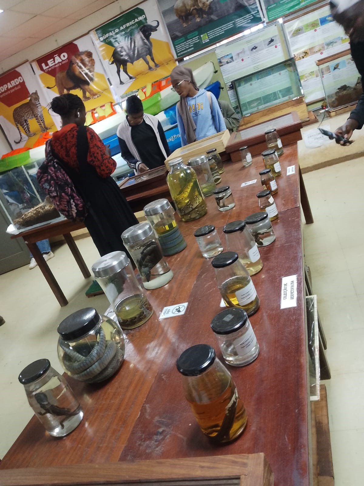

Mini-Museu · Localização
Localização e horários
Onde estamos
O Mini-Museu de Biodiversidade situa-se no Instituto Superior Politécnico de Manica (ISPM), no âmbito do curso de Ecoturismo e Gestão de Fauna Bravia (EGFB). É um espaço de conservação, ensino e divulgação que reúne espécies vivas em cativeiro e espécimes conservados (crânios, material em formalina, herbários e colecção entomológica).
Horário de funcionamento
Segunda a sexta
8h00 – 15h30
Encerrado ao fim de semana e feriados (salvo actividades agendadas do curso).
